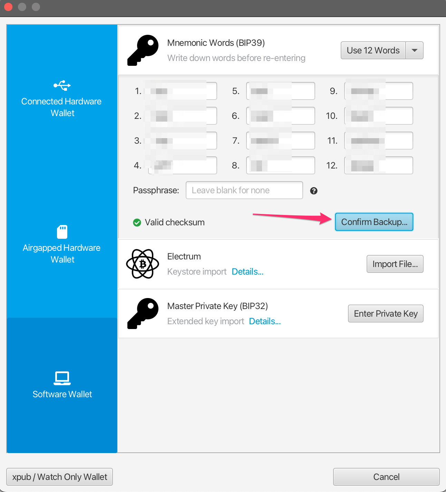
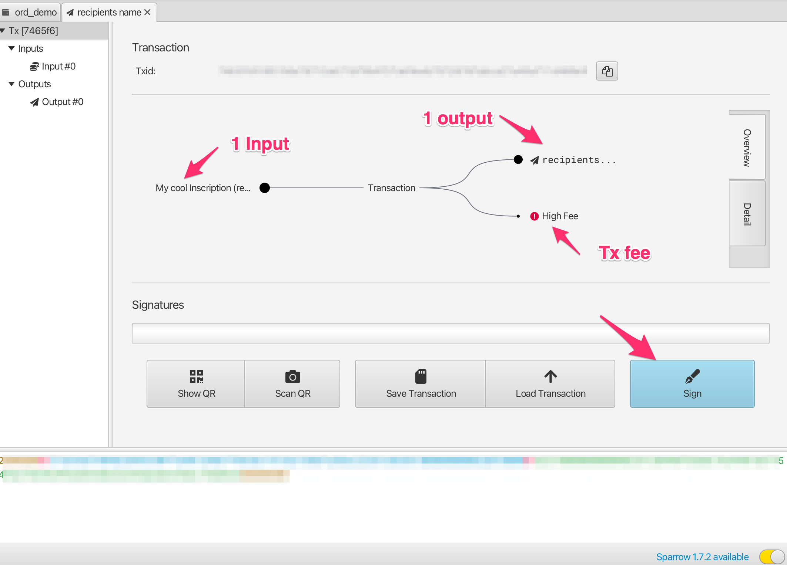

Einführung
This handbook is a guide to ordinal theory. Ordinal theory concerns itself with gros, giving them individual identities and allowing them to be tracked, transferred, and imbued with meaning.
Gros, not groestlcoin, are the atomic, native currency of the Groestlcoin network. One groestlcoin can be sub-divided into 100,000,000 gros, but no further.
Ordinal theory does not require a sidechain or token aside from Groestlcoin, and can be used without any changes to the Groestlcoin network. It works right now.
Ordinal theory imbues gros with numismatic value, allowing them to be collected and traded as curios.
Individual gros can be inscribed with arbitrary content, creating unique Groestlcoin-native digital artifacts that can be held in Groestlcoin wallets and transferred using Groestlcoin transactions. Inscriptions are as durable, immutable, secure, and decentralized as Groestlcoin itself.
Andere, ungewöhnlichere Anwendungsfälle sind möglich: Off-Chain-Farbmünzen, Public-Key-Infrastruktur mit Schlüsselrotation, ein dezentralisierter Ersatz für das DNS. Bisher sind solche Anwendungsfälle jedoch spekulativ und existieren nur in den Köpfen randständiger Ordinaltheoretiker.
Für weitere details zur ordinal theory siehe die Übersicht.
Für weitere details zu inscriptions siehe inscriptions.
Wenn Sie bereit sind, sich die Hände schmutzig zu machen, ist ein guter Ausgangspunkt inscriptions, eine eigenartige Art von digitaler Artefakten, die durch die ordinal theorie ermöglicht wird.
Links
Ordinal theorie Übersicht
Ordinals are a numbering scheme for gros that allows tracking and transferring individual gros. These numbers are called ordinal numbers. Gros are numbered in the order in which they're mined, and transferred from transaction inputs to transaction outputs first-in-first-out. Both the numbering scheme and the transfer scheme rely on order, the numbering scheme on the order in which gros are mined, and the transfer scheme on the order of transaction inputs and outputs. Thus the name, ordinals.
Technical details are available in the BIP.
Ordinal theory does not require a separate token, another blockchain, or any changes to Groestlcoin. It works right now.
Ordinal zahlen haben einige verschiedene Darstellungen:
-
Integer notation:
2099994106992659The ordinal number, assigned according to the order in which the gro was mined. -
Decimal notation:
3891094.16797The first number is the block height in which the gro was mined, the second the offset of the gro within the block. -
Degree notation:
3°111094′214″16797‴. We'll get to that in a moment. -
Percentile notation:
99.99971949060254%. The gro's position in Groestlcoin's supply, expressed as a percentage. -
Name:
satoshi. An encoding of the ordinal number using the charactersathroughz.
Arbitrary assets, such as NFTs, security tokens, accounts, or stablecoins can be attached to gros using ordinal numbers as stable identifiers.
Ordinals is an open-source project, developed on GitHub. The project consists of a BIP describing the ordinal scheme, an index that communicates with a Groestlcoin Core node to track the location of all gros, a wallet that allows making ordinal-aware transactions, a block explorer for interactive exploration of the blockchain, functionality for inscribing gros with digital artifacts, and this manual.
Seltenheit
Humans are collectors, and since gros can now be tracked and transferred, people will naturally want to collect them. Ordinal theorists can decide for themselves which gros are rare and desirable, but there are some hints…
Groestlcoin has periodic events, some frequent, some more uncommon, and these naturally lend themselves to a system of rarity. These periodic events are:
-
Blocks: A new block is mined approximately every 1 minute, from now until the end of time.
-
Difficulty adjustments: Every 2016 blocks, or approximately every 1.5 days, the Groestlcoin network responds to changes in hashrate by adjusting the difficulty target which blocks must meet in order to be accepted.
-
Halvings: Every 1,050,000 blocks.
-
Cycles: Every 6 * 1,050,000 blocks.
Dies ergibt die folgenden Seltenheitsstufen:
common: Any gro that is not the first gro of its blockuncommon: The first gro of each blockrare: The first gro of each difficulty adjustment periodepic: The first gro of each halving epochlegendary: The first gro of each cyclemythic: The first gro of the genesis block
Which brings us to degree notation, which unambiguously represents an ordinal number in a way that makes the rarity of a gro easy to see at a glance:
A°B′C″D‴
│ │ │ ╰─ Index of gro in the block
│ │ ╰─── Index of block in difficulty adjustment period
│ ╰───── Index of block in halving epoch
╰─────── Cycle, numbered starting from 0
Ordinal-Theoretiker verwenden oft die Begriffe "Stunde", "Minute", "Sekunde" und "Dritte" für A, B, C und D.
Now for some examples. This gro is common:
1°1′1″1‴
│ │ │ ╰─ Not first gro in block
│ │ ╰─── Not first block in difficulty adjustment period
│ ╰───── Not first block in halving epoch
╰─────── Second cycle
This gro is uncommon:
1°1′1″0‴
│ │ │ ╰─ First gro in block
│ │ ╰─── Not first block in difficulty adjustment period
│ ╰───── Not first block in halving epoch
╰─────── Second cycle
This gro is rare:
1°1′0″0‴
│ │ │ ╰─ First gro in block
│ │ ╰─── First block in difficulty adjustment period
│ ╰───── Not the first block in halving epoch
╰─────── Second cycle
This gro is epic:
1°0′1″0‴
│ │ │ ╰─ First gro in block
│ │ ╰─── Not first block in difficulty adjustment period
│ ╰───── First block in halving epoch
╰─────── Second cycle
This gro is legendary:
1°0′0″0‴
│ │ │ ╰─ First gro in block
│ │ ╰─── First block in difficulty adjustment period
│ ╰───── First block in halving epoch
╰─────── Second cycle
And this gro is mythic:
0°0′0″0‴
│ │ │ ╰─ First gro in block
│ │ ╰─── First block in difficulty adjustment period
│ ╰───── First block in halving epoch
╰─────── First cycle
If the block offset is zero, it may be omitted. This is the uncommon gro from above:
1°1′1″
│ │ ╰─ Not first block in difficulty adjustment period
│ ╰─── Not first block in halving epoch
╰───── Second cycle
Rare Gro Supply
Gesamtversorgung
common: 10.4 quadrillionungewöhnlich: 6,929,999selten: 3437episch: 32legendär: 5mythisch: 1
Aktuelle Versorgung
common: 8.3 quadrillionungewöhnlich: 745,855rare: 369episch: 3legendary: 0mythisch: 1
At the moment, even uncommon gros are quite rare. As of this writing, 745,855 uncommon gros have been mined - one per 25.6 groestlcoin in circulation.
Namen
Each gro has a name, consisting of the letters A through Z, that get shorter the further into the future the gro was mined. They could start short and get longer, but then all the good, short names would be trapped in the unspendable genesis block.
As an example, 1905530482684727°'s name is "iaiufjszmoba". The name of the last gro to be mined is "a". Every combination of 10 characters or less is out there, or will be out there, someday.
Exoten
Gros may be prized for reasons other than their name or rarity. This might be due to a quality of the number itself, like having an integer square or cube root. Or it might be due to a connection to a historical event, such as gros from block 1,439,424, the block in which SegWit activated, or 10499999999999999°, the last gro that will ever be mined.
Such gros are termed "exotic". Which gros are exotic and what makes them so is subjective. Ordinal theorists are encouraged to seek out exotics based on criteria of their own devising.
Inscriptions
Gros can be inscribed with arbitrary content, creating Groestlcoin-native digital artifacts. Inscribing is done by sending the gro to be inscribed in a transaction that reveals the inscription content on-chain. This content is then inextricably linked to that gro, turning it into an immutable digital artifact that can be tracked, transferred, hoarded, bought, sold, lost, and rediscovered.
Archäologie
Whether or not ordinals are of interest to NFT archaeologists is an open question! Ordinals were in fact created by Gruve-P in 2014 when he mined the Groestlcoin genesis block. In this sense, ordinals, and especially early ordinals, are certainly of historical interest.
Digitale Artefakte
Stellen Sie sich ein physisches Artefakt vor. Eine seltene Münze zum Beispiel, die unzählige Jahre lang sicher im dunklen, geheimen Schatz eines Wikingerschatzes aufbewahrt wurde, der jetzt von Ihren griffigen Händen aus der Erde gegraben wurde. Es…
…hat einen Besitzer. Du. Solange Sie es sicher aufbewahren, kann es Ihnen niemand wegnehmen.
…ist komplett. Es fehlen keine Teile.
…kann nur von Ihnen geändert werden. Wenn Sie ein Händler waren und sich auf den Weg ins China des 18. Jahrhunderts machten, konnte niemand außer Ihnen Ihr Stempelzeichen aufbringen.
…kann nur von Ihnen selbst entsorgt werden. Der Verkauf, Tausch oder die Schenkung liegt bei Ihnen, an wen auch immer Sie möchten.
Was sind digitale Artefakte? Einfach ausgedrückt sind sie das digitale Äquivalent physischer Artefakte.
Damit ein digitales Ding ein digitales Artefakt ist, muss es wie Ihre Münze sein:
-
Digitale Artefakte können Besitzer haben. Eine Nummer ist kein digitales Artefakt, denn niemand kann sie besitzen.
-
Die digitalen Artefakte sind vollständig. Ein NFT, der auf Off-Chain-Inhalte auf IPFS oder Arweave verweist, ist unvollständig und daher kein digitales Artefakt.
-
Digitale Artefakte sind erlaubnisfrei. Ein NFT, der nicht ohne Zahlung einer Lizenzgebühr verkauft werden kann, ist nicht erlaubnislos und daher kein digitales Artefakt.
-
Digitale Artefakte sind unzensierbar. Vielleicht können Sie heute einen Datenbankeintrag in einem zentralen Hauptbuch ändern, aber vielleicht nicht morgen, und daher kann es sich nicht um ein digitales Artefakt handeln.
-
Digitale Artefakte sind unveränderlich. Ein NFT mit einem Upgrade-Schlüssel ist kein digitales Artefakt.
Die Definition eines digitalen Artefakts soll widerspiegeln, was NFTs sein sollten, manchmal sind und was inscriptions ihrer Natur nach immer sind.
Inscriptions
Inscriptions inscribe gros with arbitrary content, creating groestlcoin-native digital artifacts, more commonly known as NFTs. Inscriptions do not require a sidechain or separate token.
These inscribed gros can then be transferred using groestlcoin transactions, sent to groestlcoin addresses, and held in groestlcoin UTXOs. These transactions, addresses, and UTXOs are normal groestlcoin transactions, addresses, and UTXOS in all respects, with the exception that in order to send individual gros, transactions must control the order and value of inputs and outputs according to ordinal theory.
Das Inhaltsmodell der inscription ist das des Webs. Eine inscription besteht aus einem Inhaltstyp, auch MIME-Typ genannt, und dem Inhalt selbst, bei dem es sich um eine Bytefolge handelt. Dies ermöglicht die Rückgabe von inscriptions von einem Webserver und die Erstellung von HTML-inscriptions , die den Inhalt anderer inscription verwenden und neu mischen.
Der Inhalt der Inscription ist vollständig in der Kette und wird in Taproot-Skriptpfad-Ausgabeskripten gespeichert. Für Taproot-Skripte gelten nur sehr wenige Einschränkungen hinsichtlich ihres Inhalts und sie erhalten zusätzlich den Witness-Rabatt, was die Speicherung von Inscription-Inhalten relativ kostengünstig macht.
Da Ausgaben für Taproot-Skripts nur aus vorhandenen Taproot-Ausgaben getätigt werden können, werden inscriptions mithilfe eines zweiphasigen Commit/Reveal-Verfahrens vorgenommen. Zunächst wird in der Commit-Transaktion eine Taproot-Ausgabe erstellt, die ein Commit für ein Skript mit dem Inhalt der Inschrift durchführt. Zweitens wird bei der Offenlegungstransaktion die durch die Festschreibungstransaktion erzeugte Ausgabe ausgegeben, um den Inhalt der Inschrift in der chain preiszugeben.
Der Inhalt der Inscription wird mithilfe von Daten-Pushs innerhalb nicht ausgeführter Bedingungen, sogenannter „Umschläge“, serialisiert. Umschläge bestehen aus einem OP_FALSE OP_IF … OP_ENDIF , das eine beliebige Anzahl von Daten-Pushs umschließt. Da Umschläge praktisch No-Ops sind, ändern sie nicht die Semantik des Skripts, in dem sie enthalten sind, und können mit jedem anderen Sperrskript kombiniert werden.
Eine inscription mit der Zeichenfolge "Hello, world!" wird wie folgt serialisiert:
OP_FALSE
OP_IF
OP_PUSH "ord"
OP_PUSH 1
OP_PUSH "text/plain;charset=utf-8"
OP_PUSH 0
OP_PUSH "Hello, world!"
OP_ENDIF
Zuerst wird die Zeichenfolge ord gedrückt, um inscriptions von anderen Verwendungszwecken von Umschlägen zu unterscheiden.
OP_PUSH 1 indicates that the next push contains the content type, and OP_PUSH 0indicates that subsequent data pushes contain the content itself. Multiple data pushes must be used for large inscriptions, as one of taproot's few restrictions is that individual data pushes may not be larger than 520 bytes.
The inscription content is contained within the input of a reveal transaction, and the inscription is made on the first gro of its input. This gro can then be tracked using the familiar rules of ordinal theory, allowing it to be transferred, bought, sold, lost to fees, and recovered.
Inhalt
Das Datenmodell von inscriptions ist das einer HTTP-Antwort, sodass inscription inhalte von einem Webserver bereitgestellt und in einem Webbrowser angezeigt werden können.
Felder
Inscriptions können Felder vor einem optionalen Text enthalten. Jedes Feld besteht aus zwei Daten-Pushs, einem Tag und einem Wert.
Derzeit ist das einzige definierte Feld content-type mit dem Tag 1, dessen Wert der MIME-Typ des Körpers ist.
Der Anfang des Hauptteils und das Ende der Felder werden durch einen leeren Daten-Push angezeigt.
Nicht erkannte Tags werden unterschiedlich interpretiert, je nachdem, ob sie gerade oder ungerade sind. Dabei gilt die vom Lightning Network verwendete Regel "Es ist in Ordnung, ungerade zu sein".
Sogar Tags werden für Felder verwendet, die sich auf die Erstellung, Erstzuweisung oder Übertragung einer inscription auswirken können. So müssen inscription mit nicht erkannten geraden Feldern als "ungebunden“, also ohne Ortsangabe, angezeigt werden.
Ungerade Tags werden für Felder verwendet, die sich nicht auf die Erstellung, anfängliche Zuweisung oder Übertragung auswirken, wie z. B. zusätzliche Metadaten, und daher sicher ignoriert werden können.
Inscription IDs
Die inscriptions sind in den Eingaben einer Enthüllungstransaktion enthalten. Um sie eindeutig zu identifizieren, wird ihnen eine ID der Form zugewiesen:
521f8eccffa4c41a3a7728dd012ea5a4a02feed81f41159231251ecf1e5c79dai0
Der Teil vor dem „i“ ist die Transaktions-ID (txid) der Offenlegungstransaktion. Die Zahl nach dem i definiert den Index (beginnend bei 0) der neuen inscriptions, die in die Offenlegungstransaktion eingeschrieben werden.
Inscriptions können sich entweder in verschiedenen Eingaben (inputs), innerhalb derselben Eingabe oder in einer Kombination aus beiden befinden. In jedem Fall ist die Reihenfolge klar, da ein Parser die Eingaben nacheinander durchgehen und nach allen inscription envelopes suchen würde.
| Eingang | Inscription Zählen | Indices |
|---|---|---|
| 0 | 2 | i0, i1 |
| 1 | 1 | i2 |
| 2 | 3 | i3, i4, i5 |
| 3 | 0 | |
| 4 | 1 | i6 |
Sandboxen
HTML- und SVG-inscriptions werden in einer Sandbox gespeichert, um Verweise auf Inhalte außerhalb der chain zu verhindern, sodass die inscriptions unveränderlich und in sich geschlossen bleiben.
Dies wird erreicht, indem HTML und SVG-Inschriften in iframes mit dem Sandbox Attribut geladen werden und inscriptions inhalte mit Content-Security-Policy Headern bereitgestellt werden.
Metadata
Inscriptions may include CBOR metadata, stored as data pushes in fields with tag 5. Since data pushes are limited to 520 bytes, metadata longer than 520 bytes must be split into multiple tag 5 fields, which will then be concatenated before decoding.
Metadata is human readable, and all metadata will be displayed to the user with its inscription. Inscribers are encouraged to consider how metadata will be displayed, and make metadata concise and attractive.
Metadata is rendered to HTML for display as follows:
null,true,false, numbers, floats, and strings are rendered as plain text.- Byte strings are rendered as uppercase hexadecimal.
- Arrays are rendered as
<ul>tags, with every element wrapped in<li>tags. - Maps are rendered as
<dl>tags, with every key wrapped in<dt>tags, and every value wrapped in<dd>tags. - Tags are rendered as the tag , enclosed in a
<sup>tag, followed by the value.
CBOR is a complex spec with many different data types, and multiple ways of representing the same data. Exotic data types, such as tags, floats, and bignums, and encoding such as indefinite values, may fail to display correctly or at all. Contributions to ord to remedy this are welcome.
Beispiel
Since CBOR is not human readable, in these examples it is represented as JSON. Keep in mind that this is only for these examples, and JSON metadata will not be displayed correctly.
The metadata {"foo":"bar","baz":[null,true,false,0]} would be included in an inscription as:
OP_FALSE
OP_IF
...
OP_PUSH 0x05 OP_PUSH '{"foo":"bar","baz":[null,true,false,0]}'
...
OP_ENDIF
And rendered as:
<dl>
...
<dt>metadata</dt>
<dd>
<dl>
<dt>foo</dt>
<dd>bar</dd>
<dt>baz</dt>
<dd>
<ul>
<li>null</li>
<li>true</li>
<li>false</li>
<li>0</li>
</ul>
</dd>
</dl>
</dd>
...
</dl>
Metadata longer than 520 bytes must be split into multiple fields:
OP_FALSE
OP_IF
...
OP_PUSH 0x05 OP_PUSH '{"very":"long","metadata":'
OP_PUSH 0x05 OP_PUSH '"is","finally":"done"}'
...
OP_ENDIF
Which would then be concatinated into {"very":"long","metadata":"is","finally":"done"}.
Provenance
The owner of an inscription can create child inscriptions, trustlessly establishing the provenance of those children on-chain as having been created by the owner of the parent inscription. This can be used for collections, with the children of a parent inscription being members of the same collection.
Children can themselves have children, allowing for complex hierarchies. For example, an artist might create an inscription representing themselves, with sub inscriptions representing collections that they create, with the children of those sub inscriptions being items in those collections.
Specification
To create a child inscription C with parent inscription P:
- Create an inscribe transaction T as usual for C.
- Spend the parent P in one of the inputs of T.
- Include tag
3, i.e.OP_PUSH 3, in C, with the value of the serialized binary inscription ID of P, serialized as the 32-byteTXID, followed by the four-byte little-endianINDEX, with trailing zeroes omitted.
NB The bytes of a groestlcoin transaction ID are reversed in their text representation, so the serialized transaction ID will be in the opposite order.
Beispiel
An example of a child inscription of 000102030405060708090a0b0c0d0e0f101112131415161718191a1b1c1d1e1fi0:
OP_FALSE
OP_IF
OP_PUSH "ord"
OP_PUSH 1
OP_PUSH "text/plain;charset=utf-8"
OP_PUSH 3
OP_PUSH 0x1f1e1d1c1b1a191817161514131211100f0e0d0c0b0a09080706050403020100
OP_PUSH 0
OP_PUSH "Hello, world!"
OP_ENDIF
Note that the value of tag 3 is binary, not hex, and that for the child inscription to be recognized as a child, 000102030405060708090a0b0c0d0e0f101112131415161718191a1b1c1d1e1fi0 must be spent as one of the inputs of the inscribe transaction.
Example encoding of inscription ID 000102030405060708090a0b0c0d0e0f101112131415161718191a1b1c1d1e1fi255:
OP_FALSE
OP_IF
…
OP_PUSH 3
OP_PUSH 0x1f1e1d1c1b1a191817161514131211100f0e0d0c0b0a09080706050403020100ff
…
OP_ENDIF
And of inscription ID 000102030405060708090a0b0c0d0e0f101112131415161718191a1b1c1d1e1fi256:
OP_FALSE
OP_IF
…
OP_PUSH 3
OP_PUSH 0x1f1e1d1c1b1a191817161514131211100f0e0d0c0b0a090807060504030201000001
…
OP_ENDIF
Notes
The tag 3 is used because it is the first available odd tag. Unrecognized odd tags do not make an inscription unbound, so child inscriptions would be recognized and tracked by old versions of ord.
A collection can be closed by burning the collection's parent inscription, which guarantees that no more items in the collection can be issued.
Rekursion
Eine wichtige Ausnahme von Sandboxing ist die Rekursion: Der Zugriff auf den ord's /content ist zulässig, sodass Inschriften auf den Inhalt anderer Inschriften zugreifen können, indem sie /content/<INSCRIPTION_ID>.
Dies hat eine Reihe interessanter Anwendungsfälle:
-
Neumischung des Inhalts bestehender inscriptions.
-
Veröffentlichen von Code, Bild, Audio oder Stylesheet-Schnipseln als gemeinsam genutzte öffentliche Ressourcen.
-
Generative Kunstsammlungen, bei denen ein Algorithmus als JavaScript inscribed und aus mehreren inscriptions mit einzigartigen Seeds instanziiert wird.
-
Generative Profilbildsammlungen, bei denen Accessoires und Attribute als einzelne Bilder oder in einen gemeinsamen Texturatlas inscribed und dann im Collagenstil in einzigartigen Kombinationen in mehreren inscriptions kombiniert werden.
Einige andere Endpunkte, auf die inscriptions zugreifen können, sind die folgenden:
/blockheight: neueste Blockhöhe./blockhash: aktueller Block-Hash./blockhash/<HEIGHT>: Block-Hash bei gegebener Blockhöhe./blocktime: UNIX-Zeitstempel des letzten Blocks.
Pointer
In order to make an inscription on a sat other than the first of its input, a zero-based integer, called the "pointer", can be provided with tag 2, causing the inscription to be made on the sat at the given position in the outputs. If the pointer is equal to or greater than the number of total sats in the outputs of the inscribe transaction, it is ignored, and the inscription is made as usual. The value of the pointer field is a little endian integer, with trailing zeroes ignored.
An even tag is used, so that old versions of ord consider the inscription to be unbound, instead of assigning it, incorrectly, to the first sat.
This can be used to create multiple inscriptions in a single transaction on different sats, when otherwise they would be made on the same sat.
Examples
An inscription with pointer 255:
OP_FALSE
OP_IF
OP_PUSH "ord"
OP_PUSH 1
OP_PUSH "text/plain;charset=utf-8"
OP_PUSH 2
OP_PUSH 0xff
OP_PUSH 0
OP_PUSH "Hello, world!"
OP_ENDIF
An inscription with pointer 256:
OP_FALSE
OP_IF
OP_PUSH "ord"
OP_PUSH 1
OP_PUSH "text/plain;charset=utf-8"
OP_PUSH 2
OP_PUSH 0x0001
OP_PUSH 0
OP_PUSH "Hello, world!"
OP_ENDIF
An inscription with pointer 256, with trailing zeroes, which are ignored:
OP_FALSE
OP_IF
OP_PUSH "ord"
OP_PUSH 1
OP_PUSH "text/plain;charset=utf-8"
OP_PUSH 2
OP_PUSH 0x000100
OP_PUSH 0
OP_PUSH "Hello, world!"
OP_ENDIF
Ordinal theorie FAQ
Was ist ordinal theorie?
Ordinal theory is a protocol for assigning serial numbers to gros, the smallest subdivision of a groestlcoin, and tracking those gros as they are spent by transactions.
These serial numbers are large numbers, like this 804766073970493. Every gro, which is ¹⁄₁₀₀₀₀₀₀₀₀ of a groestlcoin, has an ordinal number.
Does ordinal theory require a side chain, a separate token, or changes to Groestlcoin?
Nope! Ordinal theory works right now, without a side chain, and the only token needed is groestlcoin itself.
Wofür ist die Ordinaltheorie gut?
Collecting, trading, and scheming. Ordinal theory assigns identities to individual gros, allowing them to be individually tracked and traded, as curios and for numismatic value.
Ordinal theory also enables inscriptions, a protocol for attaching arbitrary content to individual gros, turning them into groestlcoin-native digital artifacts.
Wie funktioniert die Ordinaltheorie?
Ordinal numbers are assigned to gros in the order in which they are mined. The first gro in the first block has ordinal number 0, the second has ordinal number 1, and the last gro of the first block has ordinal number 4,999,999,999.
Gros live in outputs, but transactions destroy outputs and create new ones, so ordinal theory uses an algorithm to determine how gros hop from the inputs of a transaction to its outputs.
Glücklicherweise ist dieser Algorithmus sehr einfach.
Gros transfer in first-in-first-out order. Think of the inputs to a transaction as being a list of gros, and the outputs as a list of slots, waiting to receive a gro. To assign input gros to slots, go through each gro in the inputs in order, and assign each to the first available slot in the outputs.
Stellen Sie sich eine Transaktion mit drei Inputs und zwei Outputs vor. Die Inputs befinden sich auf der linken Seite des Pfeils, und die Outputs auf der rechten Seite, jeweils mit ihren Werten beschriftet:
[2] [1] [3] → [4] [2]
Now let's label the same transaction with the ordinal numbers of the gros that each input contains, and question marks for each output slot. Ordinal numbers are large, so let's use letters to represent them:
[a b] [c] [d e f] → [? ? ? ?] [? ?]
To figure out which gro goes to which output, go through the input gros in order and assign each to a question mark:
[a b] [c] [d e f] → [a b c d] [e f]
What about fees, you might ask? Good question! Let's imagine the same transaction, this time with a two gro fee. Transactions with fees send more gros in the inputs than are received by the outputs, so to make our transaction into one that pays fees, we'll remove the second output:
[2] [1] [3] → [4]
The gros eund fJetzt haben sie keine passenden Outputs mehr:``` [a b] [c] [d e f] → [a b c d]
So they go to the miner who mined the block as fees. [The BIP](https://github.com/Groestlcoin/ord-groestlcoin/blob/master/bip.mediawiki) has the details, but in short, fees paid by transactions are treated as extra inputs to the coinbase transaction, and are ordered how their corresponding transactions are ordered in the block. The coinbase transaction of the block might look like this:
[SUBSIDY] [e f] → [SUBSIDY e f]
## Wo finde ich die wichtigsten Details?
[The BIP!](https://github.com/Groestlcoin/ord-groestlcoin/blob/master/bip.mediawiki)
## Why are gro inscriptions called "digital artifacts" instead of "NFTs"?
Eine inscription ist ein NFT (Non-Fungible Token), aber der Begriff "digitales Artefakt" wird stattdessen verwendet, weil er einfach, anschaulich und vertraut ist.
Der Ausdruck "digitales Artefakt" ist äußerst anschaulich, selbst für jemanden, der den Begriff zuvor noch nie gehört hat. Im Vergleich dazu ist NFT ein Akronym und gibt keine Hinweise darauf, was es bedeutet, wenn man den Begriff zuvor noch nie gehört hat.
Außerdem klingt "NFT" nach Finanzterminologie, und sowohl das Wort "fungibel" als auch die Bedeutung des Wortes "Token" im Kontext von "NFT" sind außerhalb finanzieller Zusammenhänge unüblich.
## How do gro inscriptions compare to…
### Ethereum NFTs?
_Inscriptions sind immer unveränderlich._
Es gibt schlichtweg keine Möglichkeit für den Schöpfer oder den Besitzer einer Inschrift, diese nach ihrer Erstellung zu ändern.
Ethereum NFTs _können_ unveränderlich sein, aber viele sind es nicht und können vom Besitzer des NFT-Vertrags geändert oder gelöscht werden.
Um sicherzustellen, dass ein bestimmtes Ethereum NFT unveränderlich ist, muss der Vertragscode überprüft werden. Dies erfordert ein detailliertes Verständnis der EVM- und Solidity-Semantik.
Es ist für einen nicht-technischen Benutzer sehr schwer festzustellen, ob ein bestimmtes Ethereum NFT veränderbar oder unveränderlich ist. Ethereum NFT-Plattformen unternehmen keine Anstrengungen, um zu unterscheiden, ob ein NFT veränderbar oder unveränderlich ist und ob der Vertragsquellcode verfügbar ist und überprüft wurde.
_Die Inhalt das Inscription ist immer in der chain._
Es gibt keine Möglichkeit für eine Inschrift, auf Off-Chain-Inhalte zu verweisen. Dies macht Inschriften langlebiger, da Inhalte nicht verloren gehen können, und knapper, da die Ersteller von Inschriften Gebühren in Abhängigkeit von der Größe des Inhalts zahlen müssen.
Einige Ethereum NFT-Inhalte sind in der Blockchain gespeichert, aber ein Großteil befindet sich außerhalb der Blockchain und wird auf Plattformen wie IPFS oder Arweave oder auf traditionellen, vollständig zentralisierten Webservern gespeichert. Inhalte auf IPFS sind nicht garantiert dauerhaft verfügbar, und einige NFT-Inhalte, die auf IPFS gespeichert sind, gingen bereits verloren. Plattformen wie Arweave stützen sich auf schwache wirtschaftliche Annahmen und werden wahrscheinlich katastrophal scheitern, wenn diese wirtschaftlichen Annahmen nicht mehr erfüllt sind. Zentralisierte Webserver können jederzeit verschwinden.
Es ist für einen nicht-technischen Benutzer sehr schwer zu bestimmen, wo der Inhalt eines bestimmten Ethereum NFT gespeichert ist.
_Inscriptions sind viel einfacher._
Ethereum NFTs sind abhängig vom Ethereum-Netzwerk und der virtuellen Maschine, die äußerst komplex und ständigen Veränderungen unterworfen sind. Diese Änderungen erfolgen oft durch rückwärtsinkompatible Hardforks.
Inscriptions, on the other hand, depend on the Groestlcoin blockchain, which is relatively simple and conservative, and which introduces changes via backwards-compatible soft forks.
_Inscriptions sind sicherer._
Inscriptions inherit Groestlcoin's transaction model, which allow a user to see exactly which inscriptions are being transferred by a transaction before they sign it. Inscriptions can be offered for sale using partially signed transactions, which don't require allowing a third party, such as an exchange or marketplace, to transfer them on the user's behalf.
Inscriptions erben das Transaktionsmodell von Bitcoin, das es einem Benutzer ermöglicht, genau zu sehen, welche Inschriften durch eine Transaktion übertragen werden, bevor er sie signiert. Inschriften können zum Verkauf angeboten werden, indem teilweise signierte Transaktionen verwendet werden, die keine Übertragung durch Dritte wie eine Börse oder einen Marktplatz im Auftrag des Benutzers erfordern.
_Inscriptions sind seltener._
Inscriptions require groestlcoin to mint, transfer, and store. This seems like a downside on the surface, but the raison d'etre of digital artifacts is to be scarce and thus valuable.
Auf der anderen Seite können Ethereum NFTs praktisch in unbegrenzten Mengen mit einer einzigen Transaktion geprägt werden, was sie von Natur aus weniger knapp macht und somit potenziell weniger wertvoll.
_Inscriptions geben nicht vor, On-Chain-Lizenzgebühren zu unterstützen._
On-Chain-Royalties sind in der Theorie eine gute Idee, aber in der Praxis nicht umsetzbar. Die Zahlung von Lizenzgebühren kann nicht ohne komplexe und invasive Beschränkungen auf der Blockchain durchgesetzt werden. Das Ethereum-NFT-ecosystem kämpft derzeit mit Verwirrung im Zusammenhang mit Lizenzgebühren und kommt kollektiv zu der Erkenntnis, dass On-Chain-Royalties, die Künstlern als Vorteil von NFTs präsentiert wurden, nicht möglich sind. Inzwischen entfernen Plattformen die Unterstützung für Lizenzgebühren und konkurrieren auf dem Markt.
Inscriptions umgehen diese Situation vollständig, indem sie keine falschen Versprechen bezüglich der Unterstützung von On-Chain-Royalties abgeben. Dadurch vermeiden sie die Verwirrung, das Chaos und die Negativität, die im Ethereum NFT-Bereich aufgetreten sind.
_Inscriptions erschließen neue Märkte._
Groestlcoin's market capitalization and liquidity are greater than Ethereum's by a large margin. Much of this liquidity is not available to Ethereum NFTs, since many Groestlcoiners prefer not to interact with the Ethereum ecosystem due to concerns related to simplicity, security, and decentralization.
Such Groestlcoiners may be more interested in inscriptions than Ethereum NFTs, unlocking new classes of collector.
_Inscriptions haben ein umfangreicheres Datenmodell._
Inscriptions bestehen aus einem Inhaltstyp, auch als MIME-Typ bekannt, und einem Inhalt, der eine beliebige Byte-Folge ist. Dies ist das gleiche Datenmodell, das vom Web verwendet wird, und ermöglicht es, dass sich der inscription inhalt mit dem Web weiterentwickelt und jede Art von Inhalt unterstützt, die von Webbrowsern unterstützt wird, ohne Änderungen am zugrunde liegenden Protokoll zu erfordern.
## Inscriptions für…
### Künstler
_Inscriptions are on Groestlcoin._ Groestlcoin is the digital currency with the highest status and greatest chance of long-term survival. If you want to guarantee that your art survives into the future, there is no better way to publish it than as inscriptions.
_Cheaper on-chain storage._ At $0,40 per GRS and the minimum relay fee of 1 gro per vbyte, publishing inscription content costs $0.0025 per 1 million bytes.
_Inscriptions sind noch in der Frühphase!_ Inscriptions befinden sich noch in der Entwicklung und wurden noch nicht auf Mainnet gestartet. Dies gibt Ihnen die Möglichkeit, ein früher Anwender zu sein und das Medium zu erkunden, während es sich weiterentwickelt.
_Inscriptions sind einfach._ Für Inscriptions ist es nicht erforderlich, Smart Contracts zu schreiben oder zu verstehen.
_Inscriptions unlock new liquidity._ Inscriptions are more accessible and appealing to groestlcoin holders, unlocking an entirely new class of collector.
_Inscriptions sind für digitale Artefakte konzipiert._ Inscriptions sind von Grund auf so konzipiert, dass sie NFTs unterstützen, und bieten ein besseres Datenmodell sowie Funktionen wie global eindeutige Symbole und erweiterte Herkunftsnachweise.
_Inschriften unterstützen keine On-Chain-Royalties._ Das kann sowohl negativ als auch positiv betrachtet werden. On-Chain-Royalties haben Künstlern geholfen, haben jedoch auch für Verwirrung im Ethereum NFT-Ökosystem gesorgt. Das Ökosystem sieht sich nun mit diesem Problem konfrontiert und bewegt sich in Richtung einer Zukunft ohne verpflichtende Royalties. Inschriften unterstützen keine On-Chain-Royalties, da sie technisch nicht umsetzbar sind. Wenn Sie sich dafür entscheiden, Inschriften zu erstellen, gibt es viele Möglichkeiten, diese Einschränkung zu umgehen: Behalten Sie einen Teil Ihrer Inschriften für den zukünftigen Verkauf zurück, um von zukünftiger Wertsteigerung zu profitieren, oder bieten Sie vielleicht Vorteile für Benutzer an, die optionale Royalties respektieren.
### Sammler
_Inscriptions sind einfach, klar und ohne Überraschungen._ Sie sind immer unveränderlich und auf der Blockchain, ohne besondere Sorgfaltspflichten zu erfordern.
_Inscriptions are on Groestlcoin._ You can verify the location and properties of inscriptions easily with Groestlcoin full node that you control.
### Groestlcoiners
Let me begin this section by saying: the most important thing that the Groestlcoin network does is decentralize money. All other use-cases are secondary, including ordinal theory. The developers of ordinal theory understand and acknowledge this, and believe that ordinal theory helps, at least in a small way, Groestlcoin's primary mission.
Digital artifacts have merit. There are, of course, a great deal of NFTs that are ugly, stupid, and fraudulent. However, there are many that are fantastically creative, and creating and collecting art has been a part of the human story since its inception, and predates even trade and money, which are also ancient technologies.
Groestlcoin provides an amazing platform for creating and collecting digital artifacts in a secure, decentralized way, that protects users and artists in the same way that it provides an amazing platform for sending and receiving value, and for all the same reasons.
Ordinals and inscriptions increase demand for Groestlcoin block space, which increase Groestlcoin's security budget, which is vital for safeguarding Groestlcoin's transition to a fee-dependent security model, as the block subsidy is halved into insignificance.
Inscription content is stored on-chain, and thus the demand for block space for use in inscriptions is unlimited. This creates a buyer of last resort for _all_ Groestlcoin block space. This will help support a robust fee market, which ensures that Groestlcoin remains secure.
Inscriptions also counter the narrative that Groestlcoin cannot be extended or used for new use-cases. Inscriptions provide a counter argument which is easy to understand, and which targets a popular and proven use case, NFTs, which makes it highly legible.
If inscriptions prove, as the authors hope, to be highly sought after digital artifacts with a rich history, they will serve as a powerful hook for Groestlcoin adoption: come for the fun, rich art, stay for the decentralized digital money.
Inscriptions are an extremely benign source of demand for block space. Unlike, for example, stablecoins, which potentially give large stablecoin issuers influence over the future of Groestlcoin development, or DeFi, which might centralize mining by introducing opportunities for MEV, digital art and collectables on Groestlcoin, are unlikely to produce individual entities with enough power to corrupt Groestlcoin. Art is decentralized.
Inscription users and service providers are incentivized to run Groestlcoin full nodes, to publish and track inscriptions, and thus throw their economic weight behind the honest chain.
Ordinal theory and inscriptions do not meaningfully affect Groestlcoin's fungibility. Groestlcoin users can ignore both and be unaffected.
We hope that ordinal theory strengthens and enriches groestlcoin, and gives it another dimension of appeal and functionality, enabling it more effectively serve its primary use case as humanity's decentralized store of value.Beitrag zu ord
Vorgeschlagene Schritte
- Finden Sie ein Problem, an dem Sie arbeiten möchten.
- Überlegen Sie, was der erste Schritt zur Lösung des Problems sein könnte. Dies könnte in Form von Code, Forschung, einem Vorschlag oder der Empfehlung erfolgen, es zu schließen, wenn es veraltet ist oder von vornherein keine gute Idee ist.
- Kommentieren Sie das Problem, skizzieren Sie Ihren vorgeschlagenen ersten Schritt und bitten Sie um Feedback. Natürlich können Sie sofort loslegen und mit dem Schreiben von Code oder Tests beginnen, aber das vermeidet potenziell verschwendeten Aufwand, wenn das Problem veraltet, nicht klar spezifiziert, an etwas anderem blockiert oder aus anderen Gründen nicht zur Implementierung bereit ist.
- Wenn das Problem eine Code-Änderung oder Fehlerbehebung erfordert, öffnen Sie einen Entwurfs-PR mit Tests und bitten Sie um Feedback. Dies stellt sicher, dass alle auf derselben Seite darüber sind, was getan werden muss, oder was der erste Schritt zur Lösung des Problems sein sollte. Da Tests erforderlich sind, erleichtert das Schreiben der Tests zuerst die Bestätigung, dass die Änderung leicht getestet werden kann.
- Mischen Sie die Tastatur nach dem Zufallsprinzip, bis die Tests bestanden sind, und überarbeiten Sie sie, bis der Code zur Übermittlung bereit ist.
- Markieren Sie die PR als zur Überprüfung bereit.
- Überarbeiten Sie die PR nach Bedarf.
- Und schließlich: mergies!
Fangen Sie klein an
Mit kleinen Änderungen können Sie schnell Wirkung erzielen, und wenn Sie den falschen Weg einschlagen, haben Sie nicht viel Zeit verschwendet.
Ideen für kleine Probleme:
- Fügen Sie einen neuen Test oder Testfall hinzu, der die Testabdeckung erhöht
- Dokumentation hinzufügen oder verbessern
- Finden Sie ein Problem, das mehr Recherche erfordert, führen Sie diese Recherche durch und fassen Sie sie in einem Kommentar zusammen
- Finden Sie ein veraltetes Problem und kommentieren Sie, dass es geschlossen werden kann
- Finden Sie ein Problem, das nicht behoben werden sollte, und geben Sie konstruktives Feedback, in dem Sie darlegen, warum dies Ihrer Meinung nach der Fall ist
Mergen Sie frühzeitig und häufig
Teilen Sie große Aufgaben in mehrere kleinere Schritte auf, die jeweils Fortschritte machen. Wenn es einen Fehler gibt, können Sie eine Pull-Anfrage (PR) öffnen, die einen fehlgeschlagenen, ignorierten Test hinzufügt. Diese PR kann zusammengeführt werden, und der nächste Schritt könnte darin bestehen, den Fehler zu beheben und den Test nicht mehr zu ignorieren. Führen Sie umfangreiche Recherchen oder Tests durch und berichten Sie über Ihre Ergebnisse. Zerlegen Sie ein Feature in kleine Unterfeatures und implementieren Sie sie nacheinander.
Herauszufinden, wie man eine größere PR in kleinere PRs aufteilt, die jeweils zusammengeführt werden können, ist eine Kunstform, die es wert ist, geübt zu werden. Das Schwierige daran ist, dass jede PR selbst eine Verbesserung darstellen muss.
Ich bemühe mich, diesen Rat selbst zu befolgen, und es geht mir immer besser, wenn ich das tue.
Kleine Änderungen lassen sich schnell schreiben, überprüfen und zusammenführen, was viel mehr Spaß macht als an einer einzigen riesigen Pull-Anfrage (PR) zu arbeiten, die ewig dauert, um geschrieben, überprüft und zusammengeführt zu werden. Kleine Änderungen benötigen nicht viel Zeit, sodass Sie bei Bedarf aufhören können, an einer kleinen Änderung zu arbeiten, ohne viel Zeit zu verschwenden, im Vergleich zu einer größeren Änderung, die viele Stunden Arbeit repräsentiert. Wenn eine PR schnell eingereicht wird, verbessert dies das Projekt sofort ein wenig, anstatt lange auf größere Verbesserungen warten zu müssen. Kleine Änderungen sind weniger wahrscheinlich, Merge-Konflikte zu verursachen. Wie die Athener sagten: Die Schnellen commit , was sie wollen, die Langsamen merge was sie müssen.
Hilfe bekommen
Wenn Sie länger als 15 Minuten nicht weiterkommen, bitten Sie um Hilfe, z. B. bei Rust Discord, Stack Exchange oder bei einem Projektproblem oder einer Diskussion.
Üben Sie das hypothesis-driven debugging
Formulieren Sie eine Hypothese darüber, was das Problem verursacht. Überlegen Sie, wie Sie diese Hypothese testen können. Führen Sie diese Tests durch. Wenn es funktioniert, großartig, Sie haben das Problem behoben oder wissen jetzt, wie Sie es beheben können. Wenn nicht, wiederholen Sie den Vorgang mit einer neuen Hypothese.
Achten Sie auf Fehlermeldungen
Lesen Sie alle Fehlermeldungen und dulden Sie keine Warnungen.
Spenden
Ordinals is an open-source project by Groestlcoin in development since early 2023.
You can donate here: https://www.groestlcoin.org/donations/
Ordinal Theorie Anleitungen
See the table of contents for a list of guides, including a guide to the explorer, a guide for gro hunters, and a guide to inscriptions.
Ordinal Explorer
The ord binary includes a block explorer. We host a instance of the block explorer on mainnet at ordinals.groestlcoin.org, and on signet at ordinals-signet.groestlcoin.org.
Ausführen des Explorers
Der Server kann lokal betrieben werden mit:
ord server
Um einen Port anzugeben, fügen Sie Folgendes --http-port flag:
ord server --http-port 8080
To enable the JSON-API endpoints add the --enable-json-api or -j flag (see here for more info):
ord --enable-json-api server
Um zu testen, wie Ihre inscription aussehen werden, können Sie Folgendes ausführen:
ord preview <FILE1> <FILE2> ...
Suchen
Das Suchfeld akzeptiert eine Vielzahl von Objektdarstellungen.
Blöcke
Blöcke können per Hash durchsucht werden, zum Beispiel der Genesis-Block:
00000ac5927c594d49cc0bdb81759d0da8297eb614683d3acb62f0703b639023
Transaktionen
Transactions can be searched by hash, for example, the block 1 coinbase transaction:
cf72b5842b3528fd7f3065ba9e93c50a62e84f42b3b7b7a351d910b5e353b662
Outputs
Transaktions outputs können nach Outpoint durchsucht werden, zum Beispiel die einzige outputs der Genesis-Block-Coinbase-Transaktion:
3ce968df58f9c8a752306c4b7264afab93149dbc578bd08a42c446caaa6628bb:0
Gros
Gros can be searched by integer, their position within the entire groestlcoin supply:
Nach Dezimalstellen, ihrem Block und der Position innerhalb dieses Blocks:
Nach Grad, ihrem Zyklus, den Blöcken seit der letzten Halbierung, den Blöcken seit der letzten Schwierigkeitsanpassung und der Position in ihrem Block:
Nach Namen, ihrer Basis-26-Darstellung mit den Buchstaben "a" bis "z":
Or by percentile, the percentage of groestlcoin's supply that has been or will have been issued when they are mined:
JSON-API
You can run ord with the --enable-json-api flag to access endpoints that return JSON instead of HTML if you set the HTTP Accept: application/json header. The structure of theses objects closely follows what is shown in the HTML. These endpoints are:
/inscription/<INSCRIPTION_ID>/inscriptions/inscriptions/block/<BLOCK_HEIGHT>/inscriptions/block/<BLOCK_HEIGHT>/<PAGE_INDEX>/inscriptions/<FROM>/inscriptions/<FROM>/<N>/output/<OUTPOINT>/output/<OUTPOINT>/sat/<SAT>
To get a list of the latest 100 inscriptions you would do:
curl -s -H "Accept: application/json" 'http://0.0.0.0:80/inscriptions'
To see information about a UTXO, which includes inscriptions inside it, do:
curl -s -H "Accept: application/json" 'http://0.0.0.0:80/output/bc4c30829a9564c0d58e6287195622b53ced54a25711d1b86be7cd3a70ef61ed:0'
Which returns:
{
"value": 10000,
"script_pubkey": "OP_PUSHNUM_1 OP_PUSHBYTES_32 156cc4878306157720607cdcb4b32afa4cc6853868458d7258b907112e5a434b",
"address": "grs1pz4kvfpurqc2hwgrq0nwtfve2lfxvdpfcdpzc6ujchyr3ztj6gd9sfr6ayf",
"transaction": "bc4c30829a9564c0d58e6287195622b53ced54a25711d1b86be7cd3a70ef61ed",
"sat_ranges": null,
"inscriptions": [
"6fb976ab49dcec017f1e201e84395983204ae1a7c2abf7ced0a85d692e442799i0"
]
}
Ordinal Inscription Anleitungen
Individual gros can be inscribed with arbitrary content, creating Groestlcoin-native digital artifacts that can be held in a Groestlcoin wallet and transferred using Groestlcoin transactions. Inscriptions are as durable, immutable, secure, and decentralized as Groestlcoin itself.
Working with inscriptions requires a Groestlcoin full node, to give you a view of the current state of the Groestlcoin blockchain, and a wallet that can create inscriptions and perform gro control when constructing transactions to send inscriptions to another wallet.
Groestlcoin Core provides both a Groestlcoin full node and wallet. However, the Groestlcoin Core wallet cannot create inscriptions and does not perform gro control.
This requires ord, the ordinal utility. ord doesn't implement its own wallet, so ord wallet subcommands interact with Groestlcoin Core wallets.
Dieser Anleitungen behandelt:
- Installing Groestlcoin Core
- Syncing the Groestlcoin blockchain
- Creating a Groestlcoin Core wallet
- Using
ord wallet receiveto receive gros - Inscriptions erstellen mit
ord wallet inscribe - Versenden von inscriptions mit
ord wallet send - Empfangen von inscriptions mit
ord wallet receive
Hilfe bekommen
If you get stuck, try asking for help on the Groestlcoin Discord Server, or checking GitHub for relevant issues.
Installing Groestlcoin Core
Groestlcoin Core is available from groestlcoin.org.
Making inscriptions requires Groestlcoin Core 24 or newer.
This guide does not cover installing Groestlcoin Core in detail. Once Groestlcoin Core is installed, you should be able to run groestlcoind -version successfully from the command line. Do NOT use groestlcoin-qt.
Configuring Groestlcoin Core
ord requires Groestlcoin Core's transaction index and rest interface.
To configure your Groestlcoin Core node to maintain a transaction index, add the following to your groestlcoin.conf:
txindex=1
Or, run groestlcoind with -txindex:
groestlcoind -txindex
Details on creating or modifying your groestlcoin.conf file can be found here.
Syncing the Groestlcoin Blockchain
Um die chain zu synchronisieren, führen Sie Folgendes aus:
groestlcoind -txindex
…und lassen Sie es laufen, bis getblockcount:
groestlcoin-cli getblockcount
agrees with the block count on a block explorer like the mempool.space block explorer. ord interacts with groestlcoind, so you should leave groestlcoind running in the background when you're using ord.
The blockchain takes about 600GB of disk space. If you have an external drive you want to store blocks on, use the configuration option blocksdir=<external_drive_path>. This is much simpler than using the datadir option because the cookie file will still be in the default location for groestlcoin-cli and ord to find.
Störungssuche
Make sure you can access groestlcoind with groestlcoin-cli -getinfo and that it is fully synced.
If groestlcoin-cli -getinfo returns Could not connect to the server, groestlcoind is not running.
Make sure rpcuser, rpcpassword, or rpcauth are NOT set in your groestlcoin.conf file. ord requires using cookie authentication. Make sure there is a file .cookie in your groestlcoin data directory.
If groestlcoin-cli -getinfo returns Could not locate RPC credentials, then you must specify the cookie file location. If you are using a custom data directory (specifying the datadir option), then you must specify the cookie location like groestlcoin-cli -rpccookiefile=<your_groestlcoin_datadir>/.cookie -getinfo. When running ord you must specify the cookie file location with --cookie-file=<your_groestlcoin_datadir>/.cookie.
Make sure you do NOT have disablewallet=1 in your groestlcoin.conf file. If groestlcoin-cli listwallets returns Method not found then the wallet is disabled and you won't be able to use ord.
Make sure txindex=1 is set. Run groestlcoin-cli getindexinfo and it should return something like
{
"txindex": {
"synced": true,
"best_block_height": 776546
}
}
If it only returns {}, txindex is not set. If it returns "synced": false, groestlcoind is still creating the txindex. Wait until "synced": true before using ord.
If you have maxuploadtarget set it can interfere with fetching blocks for ord index. Either remove it or set whitebind=127.0.0.1:1331.
Installieren ord
The ord utility is written in Rust and can be built from source. Pre-built binaries are available on the releases page.
Sie können die neueste vorgefertigte Binärdatei über die Befehlszeile installieren mit:
curl --proto '=https' --tlsv1.2 -fsLS https://raw.githubusercontent.com/Groestlcoin/ord-groestlcoin/master/install.sh | bash -s
Sobald ord installiert ist, sollten Sie Folgendes ausführen können:
ord --version
Dadurch wird die Versionsnummer von ord ausgedruckt.
Creating a Groestlcoin Core Wallet
ord uses Groestlcoin Core to manage private keys, sign transactions, and broadcast transactions to the Groestlcoin network.
To create a Groestlcoin Core wallet named ord for use with ord, run:
ord wallet create
Receiving Gros
Inscriptions are made on individual gros, using normal Groestlcoin transactions that pay fees in gros, so your wallet will need some gros.
Holen Sie sich eine neue Adresse aus Ihrem ord Wallet, indem Sie Folgendes ausführen:
ord wallet receive
Und schick ihm etwas Geld.
Ausstehende Transaktionen können Sie mit einsehen:
ord wallet transactions
Sobald die Transaktion bestätigt ist, sollten Sie die Transaktionsausgaben mit ord wallet outputs sehen können.
Inscription inhalte erstellen
Gros can be inscribed with any kind of content, but the ord wallet only supports content types that can be displayed by the ord block explorer.
Zusätzlich werden inscriptions in Transaktionen aufgenommen, daher muss je nach Größe des Inhalts auch eine höhere Gebühr für die inscriptions transaktion gezahlt werden.
Der Inhalt der Inscription wird in Transaktionszeugnissen aufgenommen, die den Zeugnisrabatt erhalten. Um die ungefähre Gebühr für eine Inscription transaktion zu berechnen, teilen Sie die Größe des Inhalts durch vier und multiplizieren Sie sie mit dem Gebührensatz.
Inscription transactions must be less than 400,000 weight units, or they will not be relayed by Groestlcoin Core. One byte of inscription content costs one weight unit. Since an inscription transaction includes not just the inscription content, limit inscription content to less than 400,000 weight units. 390,000 weight units should be safe.
Inscription erstellen
Um eine Inschrift mit dem Inhalt von FILE zu erstellen, führen:
ord wallet inscribe --fee-rate FEE_RATE FILE
Ord gibt zwei Transaktions-IDs aus, eine für die Commit-Transaktion und eine für die Reveal-Transaktion, sowie die inscription -ID. inscription -IDs haben das Format TXIDiN, wobei TXID die Transaktions-ID der Reveal-Transaktion ist und N der Index der inscription in der Reveal-Transaktion ist.
The commit transaction commits to a tapscript containing the content of the inscription, and the reveal transaction spends from that tapscript, revealing the content on chain and inscribing it on the first gro of the input that contains the corresponding tapscript.
Wait for the reveal transaction to be mined. You can check the status of the commit and reveal transactions using the esplora block explorer.
Sobald die Reveal-Transaktion gemined wurde, sollte die Inscription-ID angezeigt werden, wenn Sie Folgendes ausführen:
ord wallet inscriptions
Parent-Child Inscriptions
Parent-child inscriptions enable what is colloquially known as collections, see provenance for more information.
To make an inscription a child of another, the parent inscription has to be inscribed and present in the wallet. To choose a parent run ord wallet inscriptions and copy the inscription id (<PARENT_INSCRIPTION_ID>).
Now inscribe the child inscription and specify the parent like so:
ord wallet inscribe --fee-rate FEE_RATE --parent <PARENT_INSCRIPTION_ID> CHILD_FILE
This relationship cannot be added retroactively, the parent has to be present at inception of the child.
Inscriptions Senden
Bitten Sie den Empfänger, eine neue Adresse zu generieren, indem Sie Folgendes ausführen:
ord wallet receive
Senden Sie die inscription, indem Sie Folgendes ausführen:
ord wallet send --fee-rate <FEE_RATE> <ADDRESS> <INSCRIPTION_ID>
Sehen Sie sich die ausstehende Transaktion an mit:
ord wallet transactions
Sobald die Sendetransaktion bestätigt ist, kann der Empfänger den Empfang bestätigen, indem er Folgendes ausführt:
ord wallet inscriptions
Empfang von Inscriptions
Erzeugen Sie eine neue Empfangsadresse mit:
ord wallet receive
Der Absender kann die inscriptions an Ihre Adresse übertragen mit:
ord wallet send ADDRESS INSCRIPTION_ID
Sehen Sie sich die ausstehende Transaktion an mit:
ord wallet transactions
Sobald die Send-Transaktion bestätigt ist, können Sie den Empfang bestätigen, indem Sie Folgendes ausführen:
ord wallet inscriptions
Gro Hunting
This guide is out of date. Since it was written, the ord binary was changed to only build the full gro index when the --index-sats flag is supplied. Additionally, ord now has a built-in wallet that wraps a Groestlcoin Core wallet. See ord wallet --help.
Ordinal hunting is difficult but rewarding. The feeling of owning a wallet full of UTXOs, redolent with the scent of rare and exotic gros, is beyond compare.
Ordinals are numbers for gros. Every gro has an ordinal number and every ordinal number has a gro.
Vorbereitung
Es gibt ein paar Dinge, die Sie benötigen, bevor Sie beginnen.
-
First, you'll need a synced Groestlcoin Core node with a transaction index. To turn on transaction indexing, pass
-txindexon the command-line:groestlcoind -txindexOr put the following in your Groestlcoin configuration file:
txindex=1Starten Sie es und warten Sie, bis es zum aktuellen Blockspitze aufgeschlossen hat. An diesem Punkt sollte der folgende Befehl die aktuelle Blockhöhe ausgeben:
groestlcoin-cli getblockcount -
Zweitens benötigen Sie einen synchronisierten
ordIndex.-
Get a copy of
ordfrom the repo. -
Run
RUST_LOG=info ord index. It should connect to your groestlcoin core node and start indexing. -
Warten Sie, bis die Indizierung abgeschlossen ist.
-
-
Drittens benötigen Sie eine Wallet mit UTXOs, die Sie durchsuchen möchten.
Suche nach seltenen Ordnungs
Searching for Rare Ordinals in a Groestlcoin Core Wallet
The ord wallet command is just a wrapper around Groestlcoin Core's RPC API, so searching for rare ordinals in a Groestlcoin Core wallet is Easy. Assuming your wallet is named foo:
-
Laden Sie Ihr Wallet:
groestlcoin-cli loadwallet foo -
Zeigt alle seltenen ordinal wallet-UTXOs von
foo's an:ord wallet sats
Searching for Rare Ordinals in a Non-Groestlcoin Core Wallet
The ord wallet command is just a wrapper around Groestlcoin Core's RPC API, so to search for rare ordinals in a non-Groestlcoin Core wallet, you'll need to import your wallet's descriptors into Groestlcoin Core.
Descriptors describe the ways that wallets generate private keys and public keys.
You should only import descriptors into Groestlcoin Core for your wallet's public keys, not its private keys.
Wenn der öffentliche Schlüssel-Deskriptor Ihrer Wallet kompromittiert wird, kann ein Angreifer die Adressen Ihrer Wallet sehen, aber Ihre Gelder werden sicher sein.
Wenn der Deskriptor des privaten Schlüssels Ihrer Wallet kompromittiert wird, kann ein Angreifer Ihr Wallet entleeren.
-
Holen Sie sich den Wallet-Deskriptor von der Wallet, deren UTXOs Sie nach seltenen Ordinals durchsuchen möchten. Es wird ungefähr so aussehen:
wpkh([bf1dd55e/84'/0'/0']xpub6CcJtWcvFQaMo39ANFi1MyXkEXM8T8ZhnxMtSjQAdPmVSTHYnc8Hwoc11VpuP8cb8JUTboZB5A7YYGDonYySij4XTawL6iNZvmZwdnSEEep/0/*)#csvefu29 -
Erstellen Sie eine reine Uhren-Wallet mit dem Namen
foo-watch-only:groestlcoin-cli createwallet foo-watch-only true trueGeben Sie ihm gerne einen besseren Namen als
foo-watch-only! -
Laden Sie die
foo-watch-onlyWallet:groestlcoin-cli loadwallet foo-watch-only -
Importieren Sie Ihre Wallet-Deskriptoren in
foo-watch-only:groestlcoin-cli importdescriptors \ '[{ "desc": "wpkh([bf1dd55e/84h/0h/0h]xpub6CcJtWcvFQaMo39ANFi1MyXkEXM8T8ZhnxMtSjQAdPmVSTHYnc8Hwoc11VpuP8cb8JUTboZB5A7YYGDonYySij4XTawL6iNZvmZwdnSEEep/0/*)#tpnxnxax", "timestamp":0 }]'If you know the Unix timestamp when your wallet first started receive transactions, you may use it for the value of
"timestamp"instead of0. This will reduce the time it takes for Groestlcoin Core to search for your wallet's UTXOs. -
Überprüfen Sie, ob alles funktioniert hat:
groestlcoin-cli getwalletinfo -
Zeigen Sie die seltenen Ordnungs Ihrer Brieftasche an:
ord wallet sats
Suchen nach seltenen Ordinals in einer Wallet, die Mehrweg-Deskriptoren exportiert
Some descriptors describe multiple paths in one descriptor using angle brackets, e.g., <0;1>. Multi-path descriptors are not yet supported by Groestlcoin Core, so you'll first need to convert them into multiple descriptors, and then import those multiple descriptors into Groestlcoin Core.
-
Holen Sie sich zunächst den Multipath-Deskriptor aus Ihrem Wallet. Es wird ungefähr so aussehen:
wpkh([bf1dd55e/84h/0h/0h]xpub6CcJtWcvFQaMo39ANFi1MyXkEXM8T8ZhnxMtSjQAdPmVSTHYnc8Hwoc11VpuP8cb8JUTboZB5A7YYGDonYySij4XTawL6iNZvmZwdnSEEep/<0;1>/*)#fw76ulgt -
Erstellen Sie einen Deskriptor für den Empfangsadress path:
wpkh([bf1dd55e/84'/0'/0']xpub6CcJtWcvFQaMo39ANFi1MyXkEXM8T8ZhnxMtSjQAdPmVSTHYnc8Hwoc11VpuP8cb8JUTboZB5A7YYGDonYySij4XTawL6iNZvmZwdnSEEep/0/*)Und der Adress path ändern:
wpkh([bf1dd55e/84'/0'/0']xpub6CcJtWcvFQaMo39ANFi1MyXkEXM8T8ZhnxMtSjQAdPmVSTHYnc8Hwoc11VpuP8cb8JUTboZB5A7YYGDonYySij4XTawL6iNZvmZwdnSEEep/1/*) -
Rufen Sie die Prüfsumme für den Empfangsadressdeskriptor ab und notieren Sie sie, in diesem Fall
tpnxnxax:groestlcoin-cli getdescriptorinfo \ 'wpkh([bf1dd55e/84h/0h/0h]xpub6CcJtWcvFQaMo39ANFi1MyXkEXM8T8ZhnxMtSjQAdPmVSTHYnc8Hwoc11VpuP8cb8JUTboZB5A7YYGDonYySij4XTawL6iNZvmZwdnSEEep/0/*)'{ "descriptor": "wpkh([bf1dd55e/84'/0'/0']xpub6CcJtWcvFQaMo39ANFi1MyXkEXM8T8ZhnxMtSjQAdPmVSTHYnc8Hwoc11VpuP8cb8JUTboZB5A7YYGDonYySij4XTawL6iNZvmZwdnSEEep/0/*)#csvefu29", "checksum": "tpnxnxax", "isrange": true, "issolvable": true, "hasprivatekeys": false }Und für den Änderungsadressdeskriptor, in diesem Fall
64k8wnd7:groestlcoin-cli getdescriptorinfo \ 'wpkh([bf1dd55e/84h/0h/0h]xpub6CcJtWcvFQaMo39ANFi1MyXkEXM8T8ZhnxMtSjQAdPmVSTHYnc8Hwoc11VpuP8cb8JUTboZB5A7YYGDonYySij4XTawL6iNZvmZwdnSEEep/1/*)'{ "descriptor": "wpkh([bf1dd55e/84'/0'/0']xpub6CcJtWcvFQaMo39ANFi1MyXkEXM8T8ZhnxMtSjQAdPmVSTHYnc8Hwoc11VpuP8cb8JUTboZB5A7YYGDonYySij4XTawL6iNZvmZwdnSEEep/1/*)#fyfc5f6a", "checksum": "64k8wnd7", "isrange": true, "issolvable": true, "hasprivatekeys": false } -
Laden Sie die Wallet, in die Sie die Deskriptoren importieren möchten:
groestlcoin-cli loadwallet foo-watch-only -
Now import the descriptors, with the correct checksums, into Groestlcoin Core.
groestlcoin-cli \ importdescriptors \ '[ { "desc": "wpkh([bf1dd55e/84h/0h/0h]xpub6CcJtWcvFQaMo39ANFi1MyXkEXM8T8ZhnxMtSjQAdPmVSTHYnc8Hwoc11VpuP8cb8JUTboZB5A7YYGDonYySij4XTawL6iNZvmZwdnSEEep/0/*)#tpnxnxax" "timestamp":0 }, { "desc": "wpkh([bf1dd55e/84h/0h/0h]xpub6CcJtWcvFQaMo39ANFi1MyXkEXM8T8ZhnxMtSjQAdPmVSTHYnc8Hwoc11VpuP8cb8JUTboZB5A7YYGDonYySij4XTawL6iNZvmZwdnSEEep/1/*)#64k8wnd7", "timestamp":0 } ]'If you know the Unix timestamp when your wallet first started receive transactions, you may use it for the value of the
"timestamp"fields instead of0. This will reduce the time it takes for Groestlcoin Core to search for your wallet's UTXOs. -
Überprüfen Sie, ob alles funktioniert hat:
groestlcoin-cli getwalletinfo -
Zeigen Sie die seltenen Ordnungs Ihrer Brieftasche an:
ord wallet sats
Deskriptoren exportieren
Sparrow Wallet
Navigieren Sie zur Registerkarte Einstellungen, dann zu Skriptrichtlinie und klicken Sie auf die Schaltfläche Bearbeiten, um den Deskriptor anzuzeigen.
Ordinals übertragen
The ord wallet supports transferring specific gros. You can also use groestlcoin-cli commands createrawtransaction, signrawtransactionwithwallet, and sendrawtransaction, how to do so is complex and outside the scope of this guide.
Sammeln
Currently, ord is the only wallet supporting gro-control and gro-selection, which are required to safely store and send rare gros and inscriptions, hereafter ordinals.
Die empfohlene Methode, um Ordinals zu senden, zu empfangen und zu speichern, ist die Verwendung von ord. Es ist jedoch möglich, Ordinals sicher mit anderen Wallets zu speichern und in einigen Fällen zu senden, wenn Sie vorsichtig sind.
As a general note, receiving ordinals in an unsupported wallet is not dangerous. Ordinals can be sent to any groestlcoin address, and are safe as long as the UTXO that contains them is not spent. However, if that wallet is then used to send groestlcoin, it may select the UTXO containing the ordinal as an input, and send the inscription or spend it to fees.
A guide to creating an ord-compatible wallet with Sparrow-GRS Wallet, is available in this handbook.
Please note that if you follow this guide, you should not use the wallet you create to send GRS, unless you perform manual coin-selection to avoid sending ordinals.
Sammeln von Inscriptions und Ordinals mit Sparrow Wallet
Users who cannot or have not yet set up the ord wallet can receive inscriptions and ordinals with alternative groestlcoin wallets, as long as they are very careful about how they spend from that wallet.
Dieser Leitfaden gibt einige grundlegende Schritte an, wie Sie ein Wallet mit Sparrow Wallet erstellen können, das mit ord kompatibel ist und später in ord importiert werden kann
⚠️⚠️ Achtung!! ⚠️⚠️
Im Allgemeinen sollten Sie, wenn Sie diesen Ansatz wählen, dieses Wallet mit der Sparrow-Software nur als Empfangswallet verwenden.
Do not spend any gros from this wallet unless you are sure you know what you are doing. You could very easily inadvertently lose access to your ordinals and inscriptions if you don't heed this warning.
Wallet-Einrichtung und -Empfang
Laden Sie die Sparrow Wallet von der Download-Seite für Ihr jeweiliges Betriebssystem herunter.
Wählen Sie File -> New Wallet und erstellen Sie eine neue Wallet namens ord.

Ändern Sie den "Skripttyp" in "Taproot (P2TR)" und wählen Sie die Option "Neue oder importierte Software-Wallet" aus.

Wählen Sie Verwenden von 12 Wörtern aus und klicken Sie dann auf Neue generieren. Lassen Sie das Passwortfeld leer.

Es wird eine neue 12-Wort-BIP39-Sicherungsphrase für Sie generiert. Schreiben Sie diese an einem sicheren Ort auf, da dies Ihre Sicherung ist, um Zugriff auf Ihre Brieftasche zu erhalten. Teilen Sie diese Sicherungsphrase NIEMALS mit jemand anderem oder zeigen Sie sie niemandem.
Sobald Sie die Sicherungsphrase notiert haben, klicken Sie auf Confirm Backup.

Geben Sie die zuvor notierte Sicherungsphrase erneut ein und klicken Sie dann auf Create Keystore.

Klicken Sie auf Import Keystore.

Klicken Sie auf Apply. Wenn Sie möchten, können Sie dem Wallet ein Passwort hinzufügen.

Sie haben jetzt ein Wallet, das mit ord kompatibel ist und mit Hilfe des BIP39 Seed Phrase in ord importiert werden kann. Um Ordinals oder Inschriften zu empfangen, klicken Sie auf die Registerkarte Receive und kopieren Sie eine neue Adresse.
Jedes Mal, wenn Sie empfangen möchten, sollten Sie eine brandneue Adresse verwenden und keine vorhandenen Adressen erneut verwenden.
Note that groestlcoin is different to some other blockchain wallets, in that this wallet can generate an unlimited number of new addresses. You can generate a new address by clicking on the Get Next Address button. You can see all of your addresses in the Addresses tab of the app.
Sie können jeder Adresse ein Etikett hinzufügen, um den Überblick darüber zu behalten, wofür sie verwendet wurde.

Überprüfung / Anzeige empfangener Inscriptions
Sobald Sie eine Anmeldung erhalten haben, sehen Sie eine neue Transaktion auf der Registerkarte Transactions von Sparrow sowie ein neues UTXO auf der Registerkarte UTXOs.
Initially this transaction may have an "Unconfirmed" status, and you will need to wait for it to be mined into a groestlcoin block before it is fully received.

Um den Status Ihrer Transaktion zu verfolgen, können Sie mit der rechten Maustaste darauf klicken, Copy Transaction ID auswählen und diese Transaktions-ID dann in mempool.space einfügen.

Once the transaction has confirmed, you can validate and view your inscription by heading over to the UTXOs tab, finding the UTXO you want to check, right-clicking on the Output and selecting Copy Transaction Output. This transaction output id can then be pasted into the ordinals.groestlcoin.org search.
Einfrieren von UTXOs
Wie oben erläutert, wird jede Ihrer inscription in einem Unspent Transaction Output (UTXO) gespeichert. Sie sollten sehr darauf achten, Ihre inscription nicht versehentlich auszugeben. Eine Möglichkeit, dies zu erschweren, besteht darin, den UTXO einzufrieren.
Gehen Sie dazu zur Registerkarte UTXOs, suchen Sie das UTXO, das Sie einfrieren möchten, klicken Sie mit der rechten Maustaste auf Output und wählen Sie Freeze UTXO.
Dieses UTXO (Inscription) kann jetzt nicht mehr in der Sparrow-Wallet ausgegeben werden, bis Sie es entsperren.
Importieren in die ord wallet
For details on setting up Groestlcoin Core and the ord wallet check out the Inscriptions Guide
Wenn Sie ord einrichten, können Sie, anstatt ord wallet create auszuführen, um ein brandneues Wallet zu erstellen, Ihr vorhandenes Wallet mit ord wallet restore "BIP39 SEED PHRASE" importieren und dabei die Seed-Phrase verwenden, die Sie mit Sparrow Wallet generiert haben.
There is currently a bug which causes an imported wallet to not be automatically rescanned against the blockchain. To work around this you will need to manually trigger a rescan using the groestlcoin core cli: groestlcoin-cli -rpcwallet=ord rescanblockchain 767430
Anschließend können Sie die Beschriftung Ihrer Brieftasche mithilfe von ord wallet inscriptions überprüfen
Beachten Sie, dass Sie, wenn Sie zuvor ein Wallet mit ord erstellt haben, bereits über ein Wallet mit dem Standardnamen verfügen und Ihrem importierten Wallet einen anderen Namen geben müssen. Sie können den Parameter --wallet in allen ord -Befehlen verwenden, um auf eine andere Wallet zu verweisen, z. B.:
ord --wallet ord_from_sparrow wallet restore "BIP39 SEED PHRASE"
ord --wallet ord_from_sparrow wallet inscriptions
groestlcoin-cli -rpcwallet=ord_from_sparrow rescanblockchain 767430
Inscriptions mit Sparrow Wallet versenden
⚠️⚠️ Achtung ⚠️⚠️
While it is highly recommended that you set up a groestlcoin core node and run the ord software, there are certain limited ways you can send inscriptions out of Sparrow Wallet in a safe way. Please note that this is not recommended, and you should only do this if you fully understand what you are doing.
Der Einsatz der ord Software wird einen Großteil der hier beschriebenen Komplexität beseitigen, da sie in der Lage ist, das Versenden von inscription auf einfache Weise automatisch und sicher abzuwickeln.
⚠️⚠️ Zusätzliche Warnung ⚠️⚠️
Don't use your sparrow inscriptions wallet to do general sends of non-inscription groestlcoin. You can setup a separate wallet in sparrow if you need to do normal groestlcoin transactions, and keep your inscriptions wallet separate.
Groestlcoin's UTXO model
Before sending any transaction it's important that you have a good mental model for groestlcoin's Unspent Transaction Output (UTXO) system. The way Groestlcoin works is fundamentally different to many other blockchains such as Ethereum. In Ethereum generally you have a single address in which you store ETH, and you cannot differentiate between any of the ETH - it is just all a single value of the total amount in that address. Groestlcoin works very differently in that we generate a new address in the wallet for each receive, and every time you receive gros to an address in your wallet you are creating a new UTXO. Each UTXO can be seen and managed individually. You can select specific UTXO's which you want to spend, and you can choose not to spend certain UTXO's.
Some Groestlcoin wallets do not expose this level of detail, and they just show you a single summed up value of all the groestlcoin in your wallet. However, when sending inscriptions it is important that you use a wallet like Sparrow which allows for UTXO control.
Überprüfen Sie Ihre inscription vor dem Absenden
Like we have previously described inscriptions are inscribed onto gros, and gros are stored within UTXOs. UTXO's are a collection of gros with some particular value of the number of gros (the output value). Usually (but not always) the inscription will be inscribed on the first gro in the UTXO.
When inspecting your inscription before sending the main thing you will want to check is which gro in the UTXO your inscription is inscribed on.
To do this, you can follow the Validating / Viewing Received Inscriptions described above to find the inscription page for your inscription on ordinals.groestlcoin.org
Dort finden Sie einige Metadaten zu Ihrer Inschrift, die wie folgt aussehen:

Hier gibt es einige wichtige Dinge zu überprüfen:
- Die
outputKennung entspricht der Kennung des UTXO, das Sie senden möchten - The
offsetof the inscription is0(this means that the inscription is located on the first gro in the UTXO) - the
output_valuehas enough gros to cover the transaction fee (postage) for sending the transaction. The exact amount you will need depends on the fee rate you will select for the transaction
Wenn alle oben genannten Punkte auf Ihre inscription zutreffen, sollten Sie sie sicher mit der unten aufgeführten Methode versenden.
⚠️⚠️ Be very careful sending your inscription particularly if the offset value is not 0. It is not recommended to use this method if that is the case, as doing so you could accidentally send your inscription to a groestlcoin miner unless you know what you are doing.
Senden Ihrer inscription
Um eine inscription zu senden, wechseln Sie zum Tab UTXOs und suchen Sie die UTXO, bei der Sie zuvor überprüft haben, dass sie Ihre inscription enthält.
Wenn Sie das UXTO zuvor eingefroren haben, müssen Sie mit der rechten Maustaste darauf klicken und es entsperren.
Wählen Sie die UTXO aus, die Sie senden möchten, und stellen Sie sicher, dass dies die einzige ausgewählte UTXO ist. Sie sollten in der Benutzeroberfläche UTXOs 1/1 sehen. Sobald Sie sicher sind, dass dies der Fall ist, können Sie auf Send Selected klicken.

Anschließend wird Ihnen die Schnittstelle zur Transaktionskonstruktion angezeigt. Hier müssen Sie einige Dinge überprüfen, um sicherzustellen, dass es sich um einen sicheren Versand handelt:
- Die Transaktion sollte nur eine Eingabe haben, und dies sollte das UTXO mit der Bezeichnung sein, die Sie senden möchten
- Die Transaktion sollte nur eine Ausgabe haben, nämlich die Adresse/Etikett, an die Sie die Inschrift senden möchten
Wenn Ihre Transaktion anders aussieht, z. B. wenn Sie mehrere Eingaben oder Ausgaben haben, handelt es sich möglicherweise nicht um eine sichere Übertragung Ihrer inscription, und Sie sollten das Senden abbrechen, bis Sie mehr verstehen oder sie in das ord Wallet importieren können.
Sie sollten eine angemessene Transaktionsgebühr festlegen. Sparrow wird in der Regel eine vernünftige Gebühr empfehlen, aber Sie können auch auf mempool.space nachsehen, um zu erfahren, was die empfohlene Gebührenrate für das Senden einer Transaktion ist.
Sie sollten eine Beschriftung für die Empfängeradresse hinzufügen, ideal wäre eine Beschriftung wie alice address for inscription #123.
Sobald Sie mithilfe der oben genannten Prüfungen überprüft haben, dass es sich bei der Transaktion um eine sichere Transaktion handelt, und Sie sicher sind, dass Sie sie senden können, können Sie auf Create Transaction klicken.

Auch hier können Sie noch einmal überprüfen, ob Ihre Transaktion sicher aussieht, und wenn Sie sicher sind, können Sie auf Finalize Transaction for Signing klicken.

Hier können Sie alles noch einmal überprüfen, bevor Sie auf Sign klicken.

And then actually you get very very last chance to check everything before hitting Broadcast Transaction. Once you broadcast the transaction it is sent to the groestlcoin network, and starts being propagated into the mempool.

Wenn Sie den Status Ihrer Transaktion verfolgen möchten, können Sie die Transaction Id (Txid) kopieren und in mempool.space einfügen.
Once the transaction has confirmed you can check the inscription page on ordinals.groestlcoin.org to validate that it has moved to the new output location and address.
Störungssuche
Wenn die Sparrow-Wallet eine Transaktion oder UTXO nicht anzeigt, Sie sie aber auf mempool.space sehen können!
Make sure that your wallet is connected to a groestlcoin node. To validate this, head into the Preferences-> Server settings, and click Edit Existing Connection.

Von dort aus können Sie einen Knoten auswählen und auf Test Connection klicken, um zu überprüfen, ob Sparrow erfolgreich eine Verbindung herstellen kann.

Testen
Ord can be tested using the following flags to specify the test network.
Die meisten ord Befehle in Inscriptions und Explorer können mit den folgenden Netzwerkflags ausgeführt werden:
| Network | Flag |
|---|---|
| Testnet | --testnet or -t |
| Signet | --signet or -s |
| Regtest | --regtest or -r |
Für den Regtest ist kein Herunterladen der Blockchain oder Indexierungs das ord erforderlich.
Beispiel
Run groestlcoind in regtest with:
groestlcoind -regtest -txindex
Erstellen Sie im Regtest ein Wallet mit:
ord -r wallet create
Erhalten Sie eine Regtest-Empfangsadresse mit:
ord -r wallet receive
Minen Sie 101 Blöcke (um die coinbase freizuschalten) mit:
groestlcoin-cli -regtest generatetoaddress 101 <receive address>
Inscribe im Regtest mit:
ord -r wallet inscribe --fee-rate 1 <file>
Mine die inscription mit:
groestlcoin-cli -regtest generatetoaddress 1 <receive address>
Sehen Sie sich die inscription im Regtest-Explorer an:
ord -r server
Testen der Rekursion
When testing out recursion, inscribe the dependencies first (example with p5.js):
ord -r wallet inscribe --fee-rate 1 p5.js
Dies sollte eine inscription_id zurückgeben, auf die Sie dann in Ihrer rekursiven inscription verweisen können.
ACHTUNG: Diese IDs werden unterschiedlich sein, wenn Sie auf Mainnet oder Signet inskribieren. Stellen Sie sicher, dass Sie sie für jede Kette in Ihrer rekursiven inscription ändern.
Dann können Sie Ihre rekursive inscribe einschreiben mit:
ord -r wallet inscribe --fee-rate 1 recursive-inscription.html
Schließlich müssen Sie einige Blöcke minen und den Server starten:
groestlcoin-cli generatetoaddress 6 <receive address>
ord -r server
Moderation
ord enthält einen Block-Explorer, den Sie lokal mit ord server ausführen können.
Der Block-Explorer ermöglicht das Anzeigen von Inscriptions. Inscriptions sind von Benutzern generierte Inhalte, die möglicherweise anstößig oder rechtswidrig sein können.
Es liegt in der Verantwortung jeder Person, die eine Instanz eines ordinal Block-Explorers betreibt, zu verstehen, welche Verantwortlichkeiten in Bezug auf rechtswidrige Inhalte bestehen, und zu entscheiden, welche Moderationsrichtlinien für ihre Instanz angemessen sind.
Um bestimmte inscriptions davor zu schützen, auf einer ord-Instanz angezeigt zu werden, können sie in einer YAML-Konfigurationsdatei aufgeführt werden, die mit der --config-Option geladen wird.
Um Inscriptions zu verbergen, erstellen Sie zunächst eine Konfigurationsdatei mit der Inscription-ID, die Sie ausblenden möchten:
hidden:
- 0000000000000000000000000000000000000000000000000000000000000000i0
Der vorgeschlagene Name für ord Konfigurationsdateien ist ord.yaml, aber Sie können jeden Dateinamen verwenden.
Dann übergeben Sie die Datei mit --config, wenn Sie den Server starten:
ord --config ord.yaml server
Beachten Sie, dass die Option --config nach ord, aber vor dem server Unterbefehl kommt.
ord muss neu gestartet werden, um Änderungen an der Konfigurationsdatei zu laden.
ordinals.groestlcoin.org
The ordinals.groestlcoin.org instances use systemd to run the ord server service, which is called ord, with a config file located at /var/lib/ord/ord.yaml.
To hide an inscription on ordinals.groestlcoin.org:
- SSH in den Server
- Fügen Sie die inscription-ID zu
/var/lib/ord/ord.yaml - Starten Sie den Dienst mit
systemctl restart ordneu an - Überwachen Sie den Neustart mit
journalctl -u ord
Derzeit startet ord langsam neu, sodass die Website nicht sofort wieder online ist.
Erneutes Indizieren
Sometimes the ord database must be reindexed, which means deleting the database and restarting the indexing process with either ord index update or ord server. Reasons to reindex are:
- Eine neue Hauptversion von ord, die das Datenbankschema ändert
- Die Datenbank wurde irgendwie beschädigt
Die von ord verwendete Datenbank heißt redb, daher verwenden wir den Standarddateinamen index.redb für den Index. Standardmäßig wird diese Datei an unterschiedlichen Speicherorten abhängig von Ihrem Betriebssystem gespeichert.
| Platform | Value | Beispiel |
|---|---|---|
| Linux | $XDG_DATA_HOME/ord or $HOME/.local/share/ord | /home/alice/.local/share/ord |
| macOS | $HOME/Library/Application Support/ord | /Users/Alice/Library/Application Support/ord |
| Windows | {FOLDERID_RoamingAppData}\ord | C:\Users\Alice\AppData\Roaming\ord |
Um die Datenbank zu löschen und erneut zu indizieren, müssen Sie auf MacOS die folgenden Befehle im Terminal ausführen:
rm ~/Library/Application Support/ord/index.redb
ord index update
You can of course also set the location of the data directory yourself with ord --data-dir <DIR> index update or give it a specific filename and path with ord --index <FILENAME> index update.
Hinweise zur Ordinal Bounty jagen
-
The
ordwallet can send and receive specific gros. Additionally, ordinal theory is extremely simple. A clever hacker should be able to write code from scratch to manipulate gros using ordinal theory in no time. -
For more information about ordinal theory, check out the FAQ for an overview, the BIP for the technical details, and the ord repo for the
ordwallet and block explorer. -
Satoshi was the original developer of ordinal theory. However, he knew that others would consider it heretical and dangerous, so he hid his knowledge, and it was lost to the sands of time. This potent theory is only now being rediscovered. You can help by researching rare gros.
Viel Glück und gute Fahrt!
Ordinal Bounty 0
Kriterien
Send a gro whose ordinal number ends with a zero to the submission address:
The gro must be the first gro of the output you send.
Belohnen
100,000 gros
Einsendeadresse
No longer accepting submissions.
Status
Unbeansprucht!
Ordinal Belohnung 1
Kriterien
The transaction that submits a UTXO containing the oldest gro, i.e., that with the lowest number, amongst all submitted UTXOs will be judged the winner.
Belohnen
200,000 gros
Einsendeadresse
No longer accepting submissions.
Status
Unbeansprucht!
Ordinal Belohnung 2
Kriterien
Senden an ungewöhnlich gro to the submission address:
Bestätigen Sie, dass die Einreichungsadresse keine Transaktionen erhalten hat, bevor Sie Ihren Beitrag einreichen. Nur die erste erfolgreiche Einreichung wird belohnt.
Belohnen
300,000 gros
Einsendeadresse
No longer accepting submissions.
Status
Unbeansprucht!
Ordinal Belohnung 3
Kriterien
Ordinal bounty 3 has two parts, both of which are based on ordinal names. Ordinal names are a modified base-26 encoding of ordinal numbers. To avoid locking short names inside the unspendable genesis block coinbase reward, ordinal names get shorter as the ordinal number gets longer. The name of gro 0, the first gro to be mined is nvtdijuwxlp and the name of gro 2,099,999,997,689,999, the last gro to be mined, is a.
Both parts use frequency.tsv, a list of words and the number of times they occur in the Google Books Ngram dataset. filtered to only include the names of gros which will have been mined by the end of the submission period, that appear at least 5000 times in the corpus.
frequency.tsv ist eine Datei mit tabulatorgetrennten Werten. Die erste Spalte ist das Wort, und die zweite Spalte zeigt an, wie oft es im Korpus vorkommt. Die Einträge sind von am wenigsten häufig vorkommend bis am häufigsten vorkommend sortiert.
frequency.tsv wurde mit kompiliert dieses Programm.
To search an ord wallet for gros with a name in frequency.tsv, use the following ord command:
ord wallet sats --tsv frequency.tsv
This command requires the gro index, so --index-sats must be passed to ord when first creating the index.
Teil 0
Rare gros pair best with rare words.
The transaction that submits the UTXO containing the gro whose name appears with the lowest number of occurrences in frequency.tsv shall be the winner of part 0.
Teil 1
Beliebtheit ist die Quelle des Werts.
The transaction that submits the UTXO containing the gro whose name appears with the highest number of occurrences in frequency.tsv shall be the winner of part 1.
Entscheidung bei Unentschieden
Im Falle eines Unentschiedens, bei dem zwei Einsendungen mit der gleichen Häufigkeit erfolgen, geht die frühere Einsendung als Sieger hervor.
Belohnen
- Part 0: 200,000 gros
- Part 1: 200,000 gros
- Total: 400,000 gros
Einsendeadresse
No longer accepting submissions.
Status
Unbeansprucht!